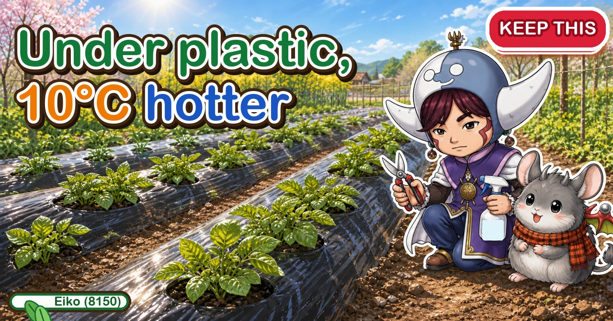
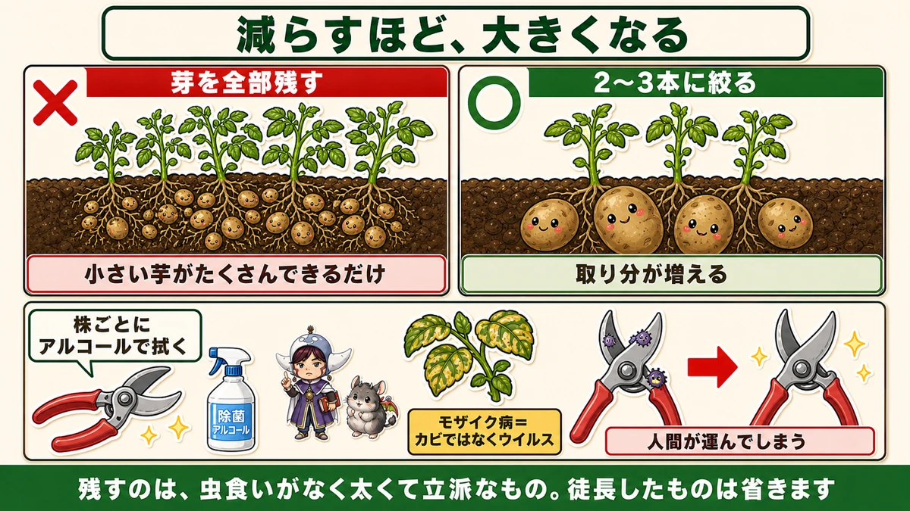
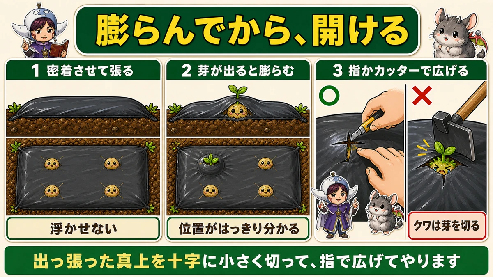
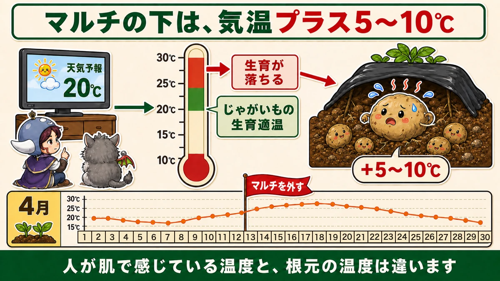
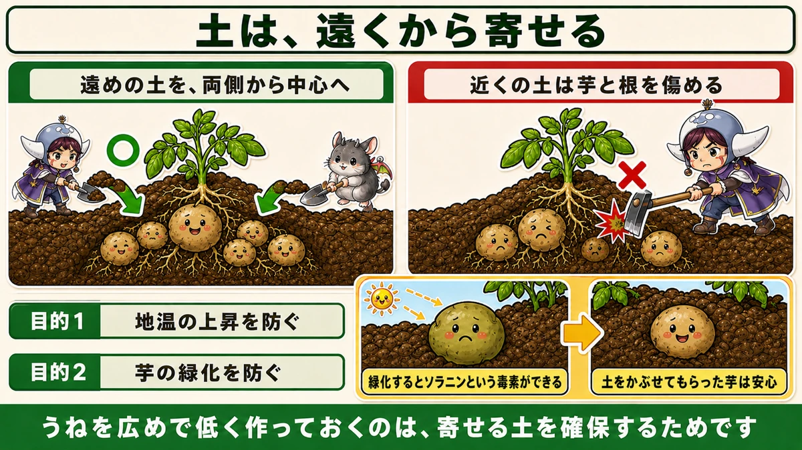

Under black plastic it's 10°C hotter 🥔 Take it off before it cooks them

🗨️ "I only ever get small potatoes."
🗨️ "How long do I leave the mulch on?"
🗨️ "I dug some up and they were green."
Hello, I'm Eiko. Eight years of growing vegetables organically and without pesticides, and a teaching licence in science.
The potatoes planted in late winter are up. From here to harvest there are only three jobs: thinning the shoots, taking the mulch off, and earthing up.
And the middle one is the one everybody misses.
The point, up front:
The soil under black plastic runs 5–10 °C above air temperature.
Potatoes grow best at 20–25 °C. On a day forecast at 20 °C, under the mulch it may already be 30. Which is why it has to come off partway through ☺️
① Thinning the shoots — fewer means bigger

What this diagram says （図解の文字）
- The fewer you keep, the bigger they get
- × keep every shoot — all you get is lots of small potatoes
- ○ cut down to 2–3 — each one's share increases
- Wipe the blade with alcohol between plants — mosaic virus is not a fungus; it's a virus, and humans carry it
- Keep the thick, sturdy ones with no insect damage. Drop the drawn-up ones
Keeping them all
A seed potato sends up several shoots, and it's a pleasing sight. It feels like more shoots should mean more crop.
It's the reverse. Keep lots of shoots and you get lots of small potatoes.
The reserve in the seed potato and what the roots can take up are both fixed. The only question is whether it's divided four ways or ten. More claimants, smaller share.
Down to two or three
I keep the two or three strongest.
Easy to pick out: thick, deep green, standing firmly. The thin, pale ones never amount to anything.
Removing them without damaging the seed potato
Two ways. If you're used to it, pull the stem out by hand — hold the crown down with one hand, grip the shoot, and pull it sideways. Keep the plant from rocking and it comes away cleanly.
If you're new to it, scissors are fine. I used scissors my first year.
Either way, work from low down, and don't damage the seed potato underneath. A wound there rots.
Disinfect the blade — this is the important bit
Potatoes get mosaic disease: leaves go blotchy yellow and growth stops.
And the key fact: it isn't a fungus. It's a virus.
A fungal disease can be managed with air movement. A virus is different — people move it.
Cut an infected plant, then cut the next one with the same blade, and you've transmitted it. You become the vector.
Wipe the scissors with alcohol between every plant.
Ordinary rubbing alcohol is enough. I take a spray bottle and kitchen roll to the garden; one spray and a wipe per plant, a few seconds each.
Skip it and you are personally distributing the disease around your healthy plants.
Don't feed
Small potatoes make you want to add fertiliser. Don't, for two reasons:
- a top-dressing won't produce a sudden improvement
- in organic growing it raises the disease risk
Potatoes are a crop that does well in poor soil. No fertiliser and no lime at planting — and the same logic applies mid-season.
② The mulch — putting it on and taking it off

What this diagram says （図解の文字）
- Cut the hole once it bulges
- 1 lay it in contact with the soil — don't let it float
- 2 the shoot makes it bulge — the position is unmistakable
- 3 open it with a finger or a blade ○ ／ × a hoe cuts the shoot off
- Cut a small cross directly over the bulge and open it out with a finger
Lay it in contact with the soil
Press the plastic down onto the soil surface.
Laid loosely it causes trouble later. In contact, the emerging shoot makes a visible bulge, and you know exactly where it is.
Cut once it bulges
Wait for the lift, then cut. Use a small knife, a craft blade, or a finger.
Don't use a hoe. It cuts the shoot off along with the plastic. I lost three at once that way.
Cut a small cross directly over the bulge and widen it with a finger; the shoot comes through on its own.
Then leave it on for a month or two
While the weather is still cold, the mulch holding soil temperature visibly speeds growth up.
Up to this point, the mulch is on your side.
The problem is the mulch later on

What this diagram says （図解の文字）
- Under the mulch it's 5–10 °C above air temperature
- Forecast 20 °C → under the mulch 25–30 °C
- Potatoes' ideal range ／ growth falls off above it
- Take the mulch off
- What a person feels on their skin isn't the temperature at the roots
20–25 °C is the range
Potatoes are happy at 20–25 °C. Above 25, through 30 and 35, growth falls away — and sustained heat weakens the plant itself and makes disease more likely.
And black plastic adds 5–10 °C
Black warming mulch runs at least 5 °C above the air, and in the right conditions 8–10 °C above.
So:
- forecast: "maximum 20 °C today"
- under the mulch: 25–30 °C
- already past the potato's range
What you feel on your skin is not what the roots are in. On a day you think of as still chilly, it's another world under the black plastic.
Take it off mid spring
Looking at temperature records, there's a useful pattern: around the middle of spring there's a first spike to nearly 25 °C, then a dip again before the end of the month.
Get the mulch off before that first spike and the timing is about right.
If the cold comes back
After removing it you may get a sharp cold snap. Then:
- lay insect netting over for warmth
- put straw around the base
Neither raises the temperature as much as the mulch — which is exactly right. You've reached the season where protection must not overheat.
③ Earthing up — use soil from further out

What this diagram says （図解の文字）
- Draw the soil from further out
- ○ soil from further out, from both sides to the centre ／ × soil from close in damages the tubers and roots
- Purpose 1: stop the soil temperature rising
- Purpose 2: stop the tubers greening — greening produces the toxin solanine ／ a covered tuber is safe
- Making the ridge wide and low is how you keep soil available to draw on
Make the ridge wide and low
If you intend to earth up, the shape at planting changes: wide and low.
Build a tall rounded ridge and there's no soil left to draw on. Low to start, added to later.
And cultivate the soil either side of the ridge so it's loose. That's what you'll be drawing on; left hard, you can't.
How
- Draw soil from the outside of the ridge in towards the plants
- From both sides
- With a hoe or a shovel
Don't use the soil close in
Soil taken from right beside the plant damages tubers and roots.
Potatoes form shallowly, around the plant — put a hoe in there and the blade goes straight into developing tubers.
So use soil from further out. That's the whole reason for building the ridge wide.
Earthing up does two jobs
1. It stops the soil heating up. The thicker the layer, the less the temperature below it moves. Same reason as removing the mulch — keeping the root zone cool.
2. It stops the tubers greening. As they grow, potatoes come close to the surface. Exposed to light they turn green, and green parts contain the toxin solanine — the same substance that's in the sprouts, which is why you're told to cut those out.
Covered, no light reaches them. Reliable prevention.
To sum up
- ✅ Keeping every shoot just gives you lots of small potatoes. Cut to 2–3
- ✅ Keep the thick, deep green, firmly standing ones
- ✅ Pull or cut, working from low down, without damaging the seed potato
- ✅ Wipe the blade with alcohol between every plant
- ✅ Mosaic is a virus, not a fungus — people carry it on tools
- ✅ Aphids carry it too
- ✅ No top-dressing
- ✅ Lay the mulch in contact with the soil so shoots show as bulges
- ✅ Cut holes with a blade or a finger; a hoe cuts the shoots
- ✅ Potatoes want 20–25 °C; above 30 growth falls away
- ✅ Black mulch adds 5 °C, sometimes 8–10
- ✅ Remove it before the first spike towards 25 °C in mid spring
- ✅ If the cold returns, netting or straw — not more mulch
- ✅ Ridges wide and low, with loose soil either side
- ✅ Earth up from further out; close-in soil damages tubers
- ✅ It keeps the soil cool and stops greening, which produces solanine
You don't have to do all of it. Write "take the mulch off" on the calendar for mid spring. That one line changes the harvest 🥔
Thank you for reading!